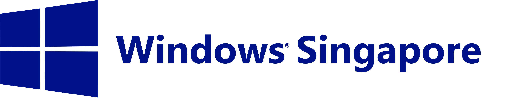
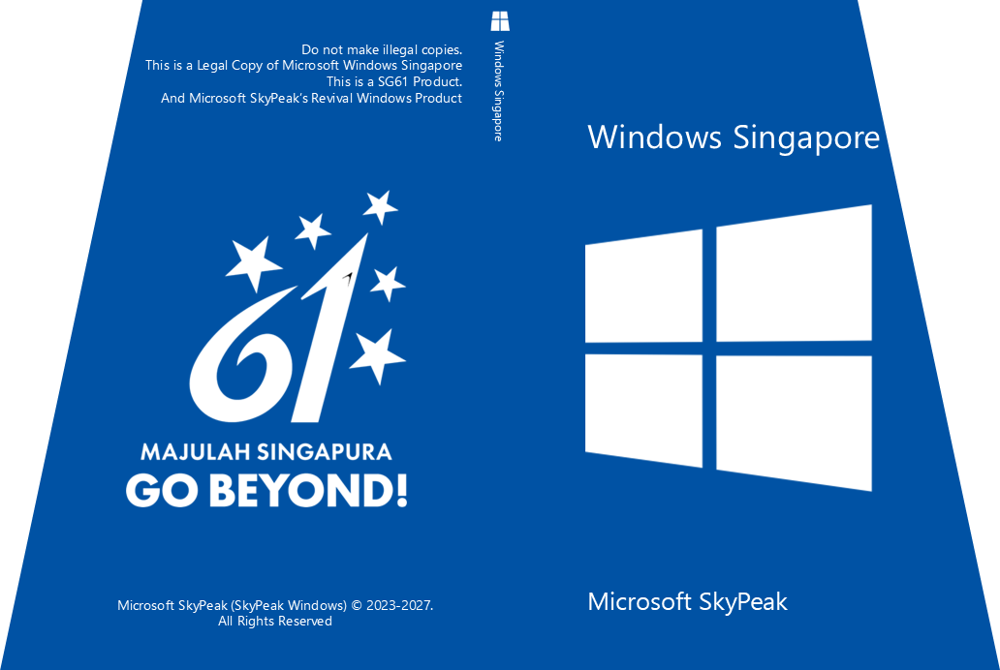
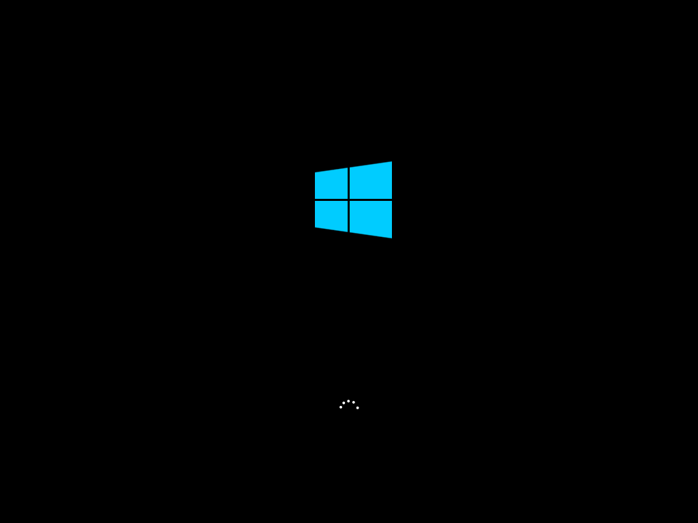
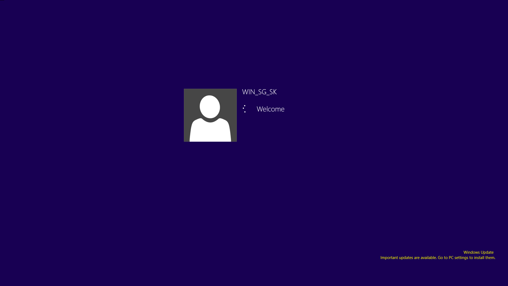
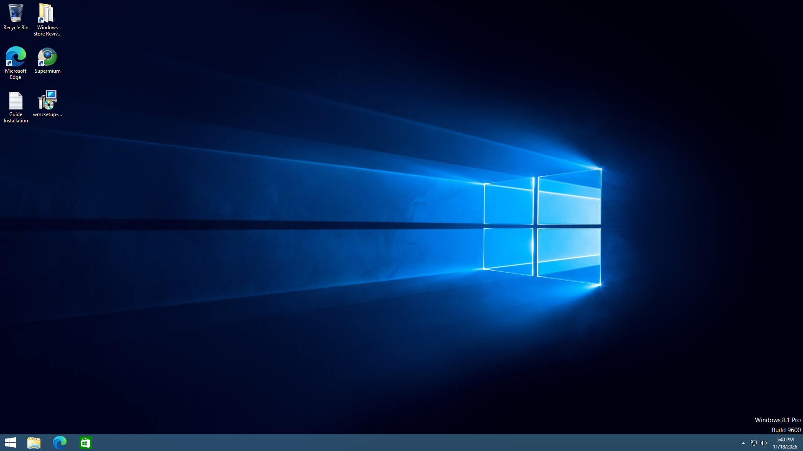

Windows Singapore
Full Name: Microsoft Windows Singapore
Codenamed: Microsoft SkyPeak Windows
Status: Beta Release (Ongoing)
Release Scheduled: 19 April 2027
Release to Manufacturing: 19th March 2027
First Release: 19 April 2023
Owership Part of the Company: 
Windows Singapore is the 1st Microsoft SkyPeak Product Released in April 2023 in the 10th Year Aniversary of Commonwealth 16 Transportations.
1st called was invented as Operationg Demo or O.D Now 2026 The Software moved on majorly to a OS and turned into an actual Windows OS using 8.1 as
it's Base Windows OS. The Current Build is nearing to compilation Numbered as Build 210. Will be avaliable on the Pre-Releases Archive.



